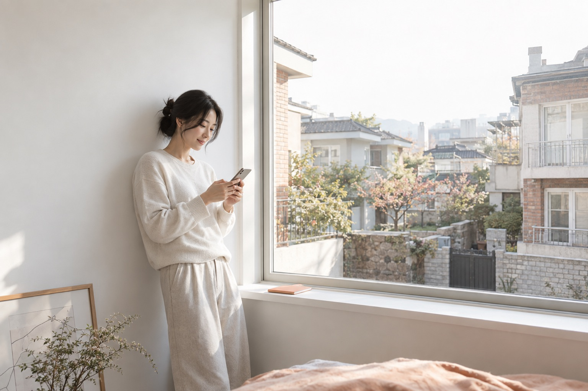

집에 관한 걱정은 덜고,
나의 하루는 그대로.
케어가 화면과 생활을 가득 채우지 않습니다. 넓은 웜화이트 여백에 생활의 동선을 놓고, 필요한 행동만 살구색으로 남깁니다.
지속되는 일상 · 여유 · 가벼움 · 자율성

색이 아니라, 바라보는 방식까지.
넓은 사진과 여백, 한쪽으로 물러난 안내 패널. 사진의 이동 방향과 독서 흐름을 맞추고 선택지는 필요한 만큼만 보여줍니다.
현관·창가·생활의 테이블·주택가 골목. 인물보다 주변 공간을 넓게 담고 살구색은 소품 한 곳에만 둡니다.
타입: 중립 고딕(Apple SD Gothic Neo / Helvetica Neue / 시스템 sans-serif). 제목 400–500, 본문 400, 행동 600. 워드마크는 단일 서체·단일 색으로 테스트합니다.
그래픽 면적 목표: 바탕 87 · 보조 5 · 정보 5 · 포인트 3%. 사진 제외 설계값이며 실측값은 아닙니다.
옐로·골드 대신 살구색을 사용하고, 그린은 기본 UI 팔레트에서 제외합니다.
나의 하루는,
평소처럼.
계약·등기·기한·거주 상황의 변화를 지속적으로 확인합니다.
촬영 디렉션 · 눈높이·와이드 / 열린 문과 넓은 벽, 사람은 공간의 일부
색·빛 · 웜화이트·스톤·소량의 살구 / 밝고 가벼운 자연광, 강한 채도 배제
최근 확인 내역
다음 확인 예정일 안내
고객이 알려준 변경사항 반영
실제 확인 범위와 주기는 서비스 정책에 따릅니다.
레이아웃 · 일상의 여백
생활의 열린 동선을 크게 담고 확인 내역은 가장자리로 물립니다.
Soft Apricot · 강조 위치
작은 확인점과 현재 단계에만 사용합니다.
그래픽 색 비중 · 목표
바탕 84 · 보조 8 · 정보 6 · 포인트 2%
사진 제외 시험값 / 실제 UI 구현에서 검증
잠깐 확인하면,
다시 나의 일상으로.
문제로 이어질 가능성이 있는 변동을 조기에 포착합니다.

촬영 디렉션 · 눈높이·와이드 / 인물을 한쪽에, 창과 벽의 여백 확보
색·빛 · 웜화이트·스톤·소량의 살구 / 밝고 가벼운 자연광, 강한 채도 배제
등록 일정이 달라졌어요
변경된 일정에 맞춰 준비 시점을 다시 확인해 주세요.
구조 설명용 가상 일정입니다. 변경 표시가 곧 위험 판정을 의미하지 않습니다.
레이아웃 · 일상의 여백
넓은 창가 장면 옆에 달라진 항목 하나만 짧게 보여줍니다.
Soft Apricot · 강조 위치
변경 항목의 표식에 집중합니다. 변화와 위험은 별도로 설명합니다.
그래픽 색 비중 · 목표
바탕 82 · 보조 8 · 정보 6 · 포인트 4%
사진 제외 시험값 / 실제 UI 구현에서 검증
준비는 가볍게,
순서는 분명하게.
변화의 의미와 지금 해야 할 일을 이해하기 쉽게 안내합니다.
촬영 디렉션 · 하이앵글 사선 / 사물을 한쪽에 모으고 작업면을 넓게 비움
색·빛 · 웜화이트·스톤·소량의 살구 / 밝고 가벼운 자연광, 강한 채도 배제
상담 전에 확인할 것
준비 시점 · 예약한 상담 전까지
- 계약서와 관련 기록 모으기
- 달라진 내용 메모하기
- 궁금한 점 정리하기
레이아웃 · 일상의 여백
정돈된 사물과 짧은 목록, 한 개의 행동을 여백으로 분리합니다.
Soft Apricot · 강조 위치
현재 준비 항목과 다음 행동에 집중합니다.
그래픽 색 비중 · 목표
바탕 80 · 보조 8 · 정보 6 · 포인트 6%
사진 제외 시험값 / 실제 UI 구현에서 검증
도움과 연결되고,
생활은 이어집니다.
고객 혼자 처리하기 어려운 시점에 절차·비용·전문가를 연결합니다.
촬영 디렉션 · 눈높이·거리의 와이드 / 주택가의 동선과 일상으로 돌아가는 움직임
색·빛 · 웜화이트·스톤·소량의 살구 / 밝고 가벼운 자연광, 강한 채도 배제
어떤 도움이 필요하세요?
내 상황 · 서류를 모았지만 다음 절차를 판단하기 어려워요.
이용 가능 범위·비용·제공 조건은 별도 확인합니다. 비용 지원이 항상 포함된다는 의미는 아닙니다.
레이아웃 · 일상의 여백
다시 생활로 이어지는 동선과 작고 명확한 연결 영역을 둡니다.
Soft Apricot · 강조 위치
도움으로 이어지는 연결 영역에 집중합니다.
그래픽 색 비중 · 목표
바탕 80 · 보조 8 · 정보 6 · 포인트 6%
사진 제외 시험값 / 실제 UI 구현에서 검증
핵심 비주얼은 ‘계속되는 생활의 공간’입니다.
서비스의 목적이 ‘관리 자체’가 아니라 ‘생활의 지속’이라는 점을 보여줍니다.
01 살핌 · 확인점
02 발견 · 변경점
03 준비 · 준비 행동
04 지원 · 도움의 연결
반복해서 남길 시각적 규칙
넓은 사진과 여백, 한쪽으로 물러난 안내 패널. 사진의 이동 방향과 독서 흐름을 맞추고 선택지는 필요한 만큼만 보여줍니다.
현관·창가·생활의 테이블·주택가 골목. 인물보다 주변 공간을 넓게 담고 살구색은 소품 한 곳에만 둡니다.
Soft Apricot은 확인점 → 변경점 → 준비 → 연결로 위치를 바꾸되, 한 화면 안에서 주요 강조는 하나로 제한합니다.
사용할 때 기대하는 특장점
서비스의 목적이 ‘관리 자체’가 아니라 ‘생활의 지속’이라는 점을 보여줍니다. 네 단계의 역할을 같은 타입과 색 규칙으로 연결해 키오스크·모바일·보고서에 확장할 수 있습니다.
가입 이후 잦은 알림으로 피로감을 주지 않는, 조용한 생활 인프라의 인상을 구성하기 좋습니다.
주의할 점
여백이 지나치면 서비스 존재감이 약해질 수 있어, 워드마크·현재 단계·주요 행동의 위치는 고정합니다.
검증할 것 · 3초 안에 서비스의 성격과 다음 행동이 보이는지, 키오스크 환경에서 강조가 충분한지, 빌라·단독주택 거주자가 자신의 생활로 받아들이는지 비교합니다. 위 장점은 설계 가설이며 전환·신뢰 개선을 검증한 결과가 아닙니다.
사진은 컨셉 검토용 AI 생성 이미지이며 실제 고객 사례가 아닙니다. 서비스 범위·확인 주기·비용·지원 조건은 미확정입니다. 코랄/살구색은 보장이나 위험 등급을 뜻하지 않습니다. 주거 유형과 위험 단계를 고정 연결하지 않습니다.